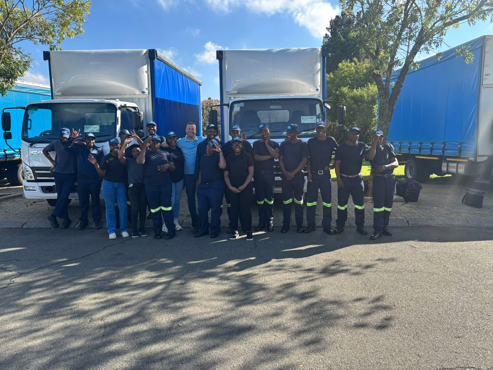
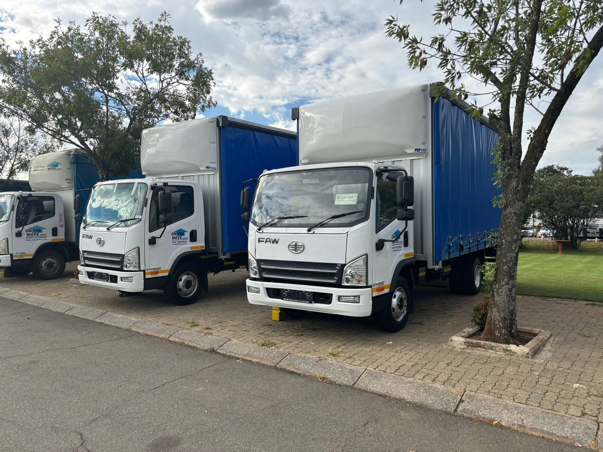
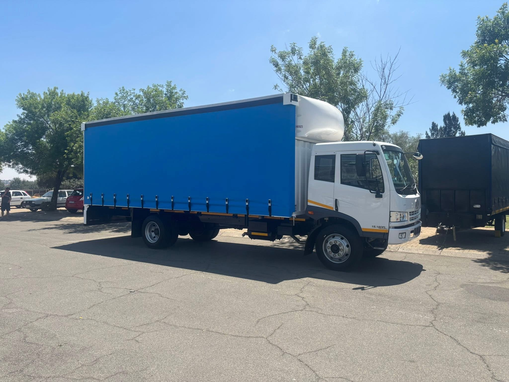
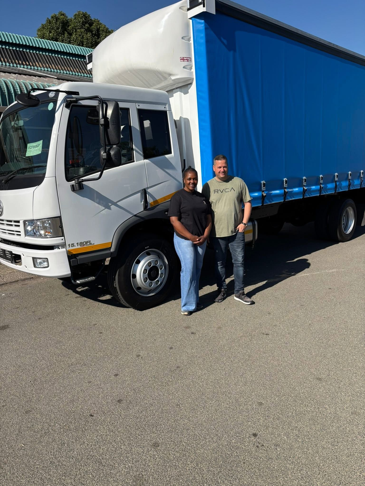
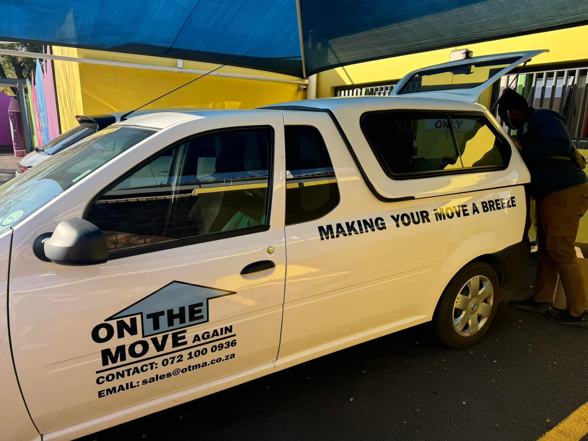

“Exceptional pricing, exceptional communication, exceptional preparation and an exceptional moving team.”
Ken de MeloGoogle review · January 2025
ON THE MOVE AGAIN · ALBERTON
Home, office and long-distance moving backed by a visible fleet, a hands-on team and a quote process built around the details that actually shape moving day.

MAKING YOUR MOVE A BREEZE
Meet the actual team, see the fleet and send the practical details before moving day. The more the crew knows upfront, the easier it is to prepare for the job in front of them.
WHAT OTMA HANDLES
Household moves, business relocations, national transport and the practical support around them can all be scoped from one clear starting point.
Home removals for apartments, houses and estates, with the move scoped around the actual load and access.
→02Practical relocation support for offices and business premises where timing, access and downtime matter.
→03Long-distance furniture removals and transport from Gauteng to destinations across South Africa.
→THE FLEET IS PART OF THE BRAND
From smaller support vehicles to larger curtain-side trucks, OTMA can prepare the move around the load, the route and the access available at each property.



A COMPANY WITH FACES
A good move is not just about the vehicle. It is about the people loading, carrying, communicating and keeping the job moving when the day gets complicated.
THE MOVE AROUND THE MOVE
The move often needs more than transport. Boxes, crate rentals, storage and cleaning can be added to the same conversation so fewer practical details are left until the last minute.
Explore services →
WHAT PEOPLE REMEMBER
“Exceptional pricing, exceptional communication, exceptional preparation and an exceptional moving team.”
“Friendly, efficient, precise and professional. The team went out of their way to make the move effortless.”